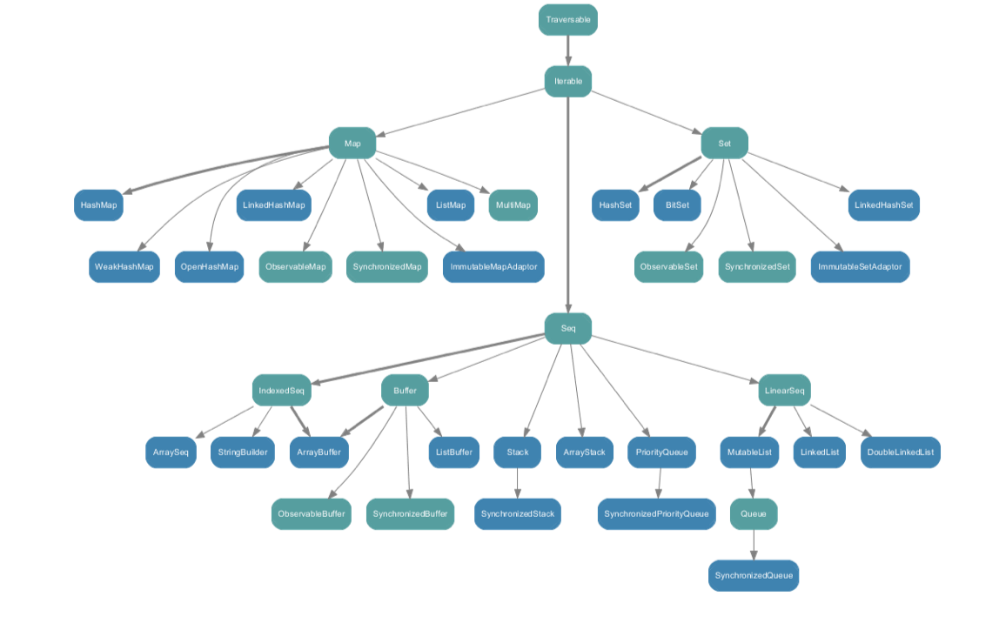
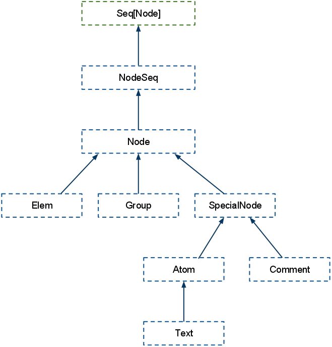

for-comprehensions
- konsis måte å jobbe med “collections” og lignende
- haskell, python, erlang og mange andre har varianter
syntax sukker for
foreachmapflatMapwithFilter
- lettere ?
syntax sukker for
foreach
map
flatMap
withFilter
for {
a <- List(1, 2)
b <- List(3, 4)
} println(a + b)
List(1, 2).foreach {
a => List(3, 4).foreach {
b => println(a + b)
}
}
for {
a <- List(1, 2)
} yield a + 1
List(1, 2).map(a => a + 1)
for {
a <- List(1, 2)
b <- List(3, 4)
c <- List(5, 6)
} yield a + b + c
List(1, 2).flatMap {
a => List(3, 4).flatMap {
b => List(5, 6).map {
c => a + b + c
}
}
}
for {
a <- List(1, 2)
b <- List(3, 4)
if a + b < 5
} yield a * b
List(1, 2).flatMap {
a => List(3, 4).withFilter {
b => a + b < 5
}.map{
b => a * b
}
}
val R = "\\d+".r
for {
R(a) <- List("123", "abc", "321")
} yield a
List("123", "abc", "321").withFilter {
case R(a) => true
case _ => false
}.map{
case R(a) => a
}
for {
a <- List(1, 2)
b = a + 1
c <- List(3, 4)
} yield a + b + c
List(1, 2).map { a =>
val b = a + 1
(a, b)
}.flatMap { case (a, b) =>
List(3, 4).map {
c => a + b + c
}
}
foreach (over 50)
trait Traversable[+A]{
def foreach[U](f:A => U):Unit
}
trait Iterable[+A] extends Traversable[A]{
def iterator:Iterator[A]
}
IndexedSeq: optimalisert random access & length
LinearSeq: optimalisert head / tail
trait Seq[+A] extends Iterable[A]{
def apply(idx:Int):A
def length:Int
def iterator:Iterator[A]
}
object List {
def apply[A](elems:A*):List[A] = ...
}
List(1, 2, 3)
object Map {
def apply[A, B](elems:(A, B)*):Map[A, B] = ...
}
Map(1 -> "a", 2 -> "b")
SortedSet: sortert
BitSet extends Set[Int]: raskt og bruker lite minne
trait Set[A] extends Iterable[A] {
def +(elem:A):Set[A]
def -(elem:A):Set[A]
def contains(elem:A):Boolean
def iterator:Iterator[A]
}
trait Map[A, +B] extends Iterable[(A, B)]{
def +[B1 >: B](kv:(A, B1)):Map[A, B1]
def -(key:A):Map[A, B]
def get(key:A):Option[B]
def iterator:Iterator[A]
}

import collection.mutable._
val myMap = new HashMap[Int, String] with SynchronizedMap[Int, String]
val myBuffer = new ListBuffer[String] with SynchronizedBuffer[String]
val mySet = new HashSet[String] with SynchronizedSet[String]
LinearSeq
sieve of eratosthenes
def from(n: Int): Stream[Int] =
Stream.cons(n, from(n + 1))
def sieve(s: Stream[Int]): Stream[Int] =
Stream.cons(s.head, sieve(s.tail filter { _ % s.head != 0 }))
def primes = sieve(from(2))
Implementer metodene i List selv
https://github.com/arktekk/scala-kurs-oppgaver/tree/master/list
Thou shalt only use implicit conversions for one of two (2) reasons:
class StringOps(s:String){
def toInt = java.lang.Integer.parseInt(s)
}
object Predef {
implicit def augmentString(s:String):StringOps = new StringOps(s)
}
import Predef._
val i = "543".toInt
// augmentString("543").toInt
type List[+A] = collection.immutable.List[A]
type Pair[+A, +B] = Tuple2[A, B]
implicit def augmentString(s:String):StringOps = new StringOps(s)
final class ArrowAssoc[A](val x: A) {
@inline def -> [B](y: B): Tuple2[A, B] = Tuple2(x, y)
def →[B](y: B): Tuple2[A, B] = ->(y)
}
implicit def any2ArrowAssoc[A](x: A): ArrowAssoc[A] = new ArrowAssoc(x)
inspiser implicits i scope med REPL
> :implicits
> :implicits -v
object Runnables {
implicit def function2Runnable(f:() => Unit) = new Runnable{
def run() { f() }
}
}
import Runnables._
SwingUtilities.invokeLater(() => println("Too convenient ?"))
implicit conversions mellom scala og java collections
import collection.JavaConversions._
val list:java.util.List[String] = Seq("hello", "world")
val seq:Seq[String] = list
pimper asScala og asJava metoder på java og scala collections
import collection.JavaConverters._
val list:java.util.List[String] = Seq("Hello", "World").asJava
val seq:Seq[String] = list.asScala
implicit val msg = "Hello"
def sayHello(s:String)(implicit m:String) = m + " " + s
sayHello("World")
> Hello World
gir deg tilgang til implicit parameters
val ordering = implicitly[Ordering[Int]]
ordering.compare(1, 2)
> -1
// implementasjon
def implicitly[A](implicit a:A):A = a
object Min {
def min[A <% Ordered[A]](a1:A, a2:A) =
if(a1 < a2) a1 else a2
// sukker for
def min[A](a1:A, a2:A)(implicit ev:A => Ordered[A]) = ...
}
case class Num(i:Int)
Min.min(Num(1), Num(2))
No implicit view available from MinRun.Num => Ordered[MinRun.Num].
[error] Min.min(Num(1), Num(2))
[error] ^
Ordering[A]
object Min {
def min[A : Ordering](a1:A, a2:A) =
if(implicitly[Ordering[A]].lt(a1, a2)) a1 else a2
// sukker for
def min[A](a1:A, a2:A)(implicit ev:Ordering[A]) = ...
}
Min.min(Num(1), Num(2))
// veldig fin for å kalle videre..
def min2[A : Ordering](a1:A, a2:A) = Min.min(a1, a2)
class Foo[A](a:A){
def int(implicit ev:A =:= Int):Int = a
}
new Foo(0).int
new Foo("Hello").int
// error: Cannot prove that java.lang.String =:= Int
def newInstance[A](implicit manifest:Manifest[A]):A =
manifest.erasure.asInstanceOf[Class[A]].newInstance
newInstance[java.util.ArrayList[String]]
object Array {
def apply(elms:A*)[A : ClassManifest]:Array[A] = ...
}
def create[A](a:A) = Array(a) // feiler
def create[A : ClassManifest](a:A) = Array(a) // ok
trait Msg[A]{
def msg(a:A)
}
object MittApi {
def needsMsg[A : Msg](a:A){ ... }
}
// brukers kode
MittApi.needsMsg("Hello")
/*
could not find implicit value for evidence parameter of type implicitstuff.Msg[java.lang.String]
MittApi.needsMsg("Hello")
^
*/
import annotation.implicitNotFound
@implicitNotFound("Du må definere/importere en implicit instans av Msg[${A}]")
trait Msg[A]{
def msg(a:A)
}
object MittApi {
def needsMsg[A : Msg](a:A){ ... }
}
// brukers kode
MittApi.needsMsg("Hello")
/*
Du må definere/importere en implicit instans av Msg[java.lang.String]
MittApi.needsMsg("Hello")
^
*/
Comparable vs Comparator
implicit object IntComparator extends java.util.Comparator[Int]{
def compare(a:Int, b:Int) = a - b
}
def myCompare[T](a:T, b:T)(implicit comarator:java.util.Comparator[Int]) =
comparator.compare(a, b)
myCompare(1,2)
myCompare("Hello", "World")
// error: could not find implicit value for evidence parameter
// of type java.util.Comparator[java.lang.String]
class Syntax[A](a:A){
def === (other:A)(implicit c:java.util.Comparator[A]) =
c.compare(a, other) == 0
}
implicit def wrapSyntax[A](a:A) = new Syntax(a)
5 === 4
Within the type system of a programming language, covariance and contravariance refers to the ordering of types from narrower to wider and their interchangeability or equivalence in certain situations (such as parameters, generics, and return types).
alle typer er
type X[T] // T er invariant
X[A] kan benyttes for X[B] hvis A == B
type X[+T] // + betyr at T er covariant
X[A] kan benyttes for X[B] hvis A er subtype av B
type X[-T] // - betyr at T er contravariant
X[A] kan benyttes for X[B] hvis A er supertype av B
class SuperType
class TheType extends SuperType
class SubType extends TheType
def x(theType:TheType){ ... }
x(new SuperType) // ikke ok
x(new TheType)
x(new SubType) // ok
class Invariant[A](a:A){
def get:A = a
def set(a:A){ ... }
}
def in(invariant:Invariant[TheType]){ ... }
in(new Invariant[SuperType]) // ikke ok
in(new Invariant[TheType])
in(new Invariant[SubType]) // ikke ok
class Covariant[+A](a:A){
def get:A = a
def set(a:A){ ... } // ikke ok, contravariant position
}
def co(covariant:Covariant[TheType]){ ... }
co(new Covariant[SuperType]) // ikke ok
co(new Covariant[TheType])
co(new Covariant[SubType]) // ok
class Contravariant[-A](a:A){
def get:A = a // ikke ok, covariant position
def set(a:A){ ... }
}
def contra(contravariant:Contravariant[TheType]){ ... }
contra(new Contravariant[SuperType]) // ok
contra(new Contravariant[TheType])
contra(new Contravariant[SubType]) // ikke ok
A <: B // A subtype av B
class Foo
class Bar extends Foo
class Foos[F <: Foo](var init:F){
def set(f:F){ init = f }
def get = init
}
val bars = new Foos[Bar](new Bar)
bars.set(new Bar)
val f:Bar = bars.get
// found Foo, required Bar
bars.set(new Foo)
// type arguments [String] do not conform to class
// Foos's type parameter bounds [F <: Foo]
val strings = new Foos[String]("")
A >: B // A supertype av B
class Foo
class Bar extends Foo
class Generator[F >: Bar]{
def next:F = new Bar
}
val gen = new Generator[Foo]
val foo:Foo = gen.next
sealed trait Lst[A]
case object Empty extends Lst[Nothing]
case class Cons[A](head:A, tail:Lst[A]) extends Lst[A]
Cons("Hello", Empty)
sealed trait Lst[A]
case object Empty extends Lst[Nothing]
case class Cons[A](head:A, tail:Lst[A]) extends Lst[A]
Cons("Hello", Empty)
/*
found : Empty.type (with underlying type object Empty)
required: Lst[java.lang.String]
Note: Nothing <: java.lang.String (and Empty.type <: Lst[Nothing]),
but trait Lst is invariant in type A.
You may wish to define A as +A instead. (SLS 4.5)
Cons("Hello", Empty)
*/
sealed trait Lst[+A]
case object Empty extends Lst[Nothing]
case class Cons[A](head:A, tail:Lst[A]) extends Lst[A]
Cons("Hello", Empty)
sealed trait Lst[+A]{ // ok, fixed it!
def ::(a:A):Lst[A] = Cons(a, this)
}
case object Empty extends Lst[Nothing]
case class Cons[A](head:A, tail:Lst[A]) extends Lst[A]
// i bruk
"Hello" :: Empty
sealed trait Lst[+A]{
def ::(a:A):Lst[A] = Cons(a, this)
}
case object Empty extends Lst[Nothing]
case class Cons[A](head:A, tail:Lst[A]) extends Lst[A]
/*
covariant type A occurs in contravariant position in type A of value a
def ::(a:A):Lst[A] = Cons(a, this)
^
*/
sealed trait Lst[+A]{
def ::[B >: A](b:B):Lst[B] = Cons(b, this) // ok, fixed it
}
case object Empty extends Lst[Nothing]
case class Cons[A](head:A, tail:Lst[A]) extends Lst[A]
val lst:Lst[String] = "Hello" :: Empty
val lst2:Lst[Any] = 1 :: "Hello" :: Empty
def map [B, That](f: (A) ⇒ B)(implicit bf: CanBuildFrom[Set[A], B, That]): That
trait Traversable[+A] extends TraversableLike[A, Traversable[A]] with ... {
...
}
// alle implementasjonene
trait TraversableLike[+A, +Repr] {
def map[B, That](f: A => B)(implicit bf: CanBuildFrom[Repr, B, That]): That = {
val b = bf(repr)
b.sizeHint(this)
for (x <- this) b += f(x)
b.result
}
...
}
object BitSet extends BitSetFactory[BitSet] {
def newBuilder = immutable.BitSet.newBuilder
implicit def canBuildFrom: CanBuildFrom[BitSet, Int, BitSet] = bitsetCanBuildFrom
}
object Set extends SetFactory[Set] {
def newBuilder[A] = immutable.Set.newBuilder[A]
implicit def canBuildFrom[A]: CanBuildFrom[Coll, A, Set[A]] = setCanBuildFrom[A]
}
val b2:BitSet = BitSet(1, 2, 3).map(i => i * 2)
val Set[String] = b2.map(i => i.toString)
trait Set[A]{
def map [B](f: (A) ⇒ B): Set[B] // [use case]
def map [B, That](f: (A) ⇒ B)(implicit bf: CanBuildFrom[Set[A], B, That]): That
}
package lst2
import collection.mutable.{Builder}
import collection.immutable.LinearSeq
import collection.LinearSeqOptimized
import collection.generic.{GenericTraversableTemplate, SeqFactory}
object Lst extends SeqFactory[Lst] {
def newBuilder[A]: Builder[A, Lst[A]] = new Builder[A, Lst[A]] {
private[this] var lst: Lst[A] = Empty
def +=(elem: A) = {
lst = Cons(elem, lst)
this
}
def clear() { lst = Empty }
def result() = lst
}
}
sealed trait Lst[+A]
extends LinearSeq[A]
with GenericTraversableTemplate[A, Lst]
with LinearSeqOptimized[A, Lst[A]] {
override def companion = Lst
}
case object Empty extends Lst[Nothing]{
override def isEmpty = true
}
final case class Cons[A](override val head: A, override val tail: Lst[A]) extends Lst[A]{
override def isEmpty = false
}
<literal xml="support"/>
<?xml version="1.0" encoding="utf-8"?>
<weatherdata>
<forecast>
<text>
<location>
<time from="2011-12-23" to="2011-12-24" type="obsforecast">
<title>Friday and Saturday</title>
<body><strong>Telemark:</strong> Våte veibaner og synkende
temperatur kan stedvis gi glattere veier fra natt til julaften.</body>
</time>
<time from="2011-12-24" to="2011-12-25">
<title>Saturday and Sunday</title>
<body><strong>Østlandet og Telemark:</strong> Vestlig bris. Stort sett
pent vær. I kveld sørvestlig bris, økende til liten og periodevis stiv kuling 15 m/s på
kysten. Skyet eller delvis skyet. Oppholdsvær, men lengst vest regn, snø i høyden. Søndag
kveld sørvestlig frisk bris 10, sterk kuling 20 på kysten. Spredt regn, snø i høyden. Nedbør
vesentlig i vestlige områder.</body>
</time>
...
case class Time(from:String, to:String, title:String, body:String)
val xml = XML.load(getClass.getResourceAsStream("forecast_hour_by_hour.xml"))
val forecasts = for {
forecast <- xml \ "forecast"
text = forecast \ "text" // child select
time <- text \\ "time" // deep select
from = time \ "@from" // attribute select
to = time \ "@to"
title = time \ "title"
body = time \ "body"
} yield Time(from.text, to.text, title.text, body.text)
<weatherdata>
<forecast>
<text>
<location>{ forecasts.flatMap{ case Time(from, to, title, body) =>
<time from={from} to={to}>
<title>{title}</title>
<body>{body}</body>
</time> }}
</location>
</text>
</forecast>
</weatherdata>
val obs = for {
time <- xml \\ "time"
tpe = time \ "@type" if tpe.text == "obsforecast"
body = time \ "body"
title = time \ "title"
} yield title.text -> body.text
// (Friday and Saturday,<strong>Telemark:</strong> Våte veibaner og
// synkende temperatur kan stedvis gi glattere veier fra natt til julaften.)

import dispatch._
val request = url("http://www.yr.no/place/Norway/Telemark/Sauherad/Gvarv/forecast_hour_by_hour.xml")
val handler = request.as_str
val result = Http(handler)
url("http://www.yr.no") / "place" / "Norway" / "Telemark"
/ "Sauherad" / "Gvarv" / "forecast_hour_by_hour.xml"
url("http://sporing.posten.no/sporing.html") <<? Map("q" -> "123123123")
val http = new Http
val request = url("http://scala-lang.org")
http(request >>> System.out) // til OutputStream
http(request as_str) // som string
http(request <> ((xml:Elem) => xml \ "foo" \ "bar") // håndtert som xml
import tagsoup.TagSoupHttp._
http(request </> ((xml:NodeSeq) => xml \\ "body" \ "@href") // vasket html og håndtert som xml
Http / new Http with thread.Safety
new Http
new nio.Http
new gae.Http
import xml._
import dispatch._
val http = new Http
def parse(xml:Elem) =
for {
consignment <- xml \ "Consignment"
totalweight <- consignment \ "TotalWeight"
} yield totalweight.text
http(url("http://beta.bring.no/sporing/sporing.xml") <<?
Map("q" -> "TESTPACKAGE-AT-PICKUPPOINT") <> parse)
<ConsignmentSet xmlns="http://www.bring.no/sporing/1.0">
<Consignment consignmentId="SHIPMENTNUMBER">
<TotalWeight unitCode="kg">16.5</TotalWeight>
..
// List(16,5)